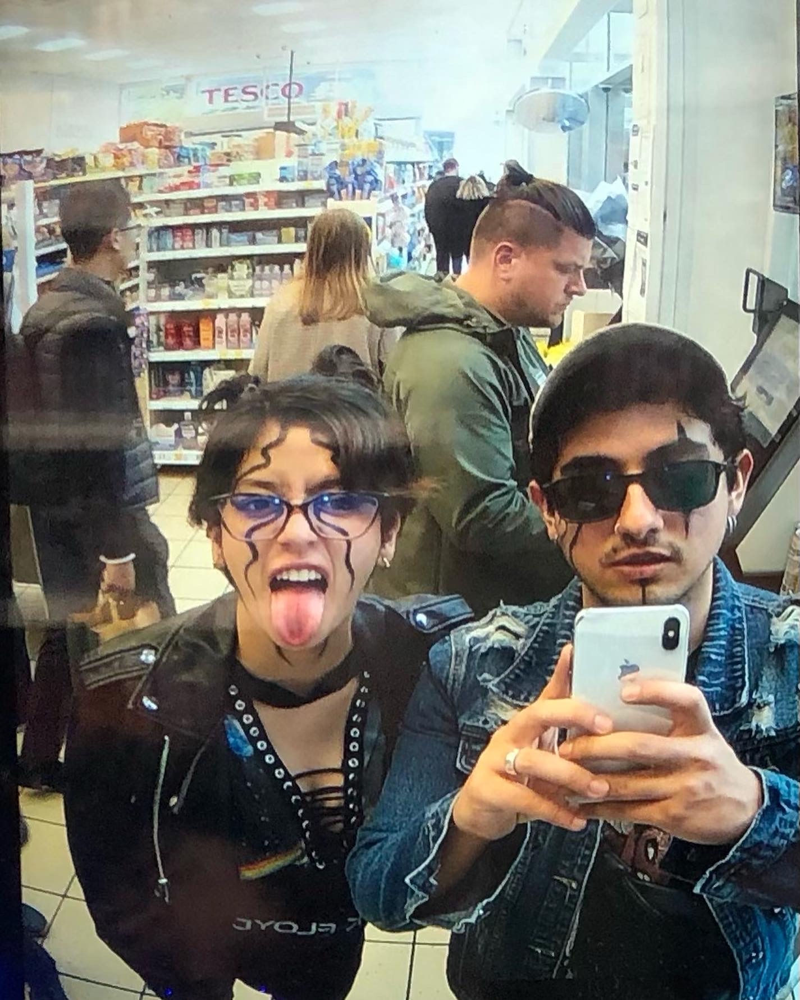

Some of my Hobbies
Noisy Concerts

Play the guitar
Reading
Eat and Travel
I love going to concerts, especially those featuring big Rock and Metal bands. There is something
electrifying about the pulsating energy of a live performance, especially when it comes to the
Rock and Metal bands. Each concert is an opportunity for me to lose myself into the music and
become one with the rhythm of the crowd.
Playing the guitar is the kind of thing that transports me to a different world, especially when
I am playing with my friends in our band in front of an audience. While I think a description
for my portfolio regarding my hobbie for playing guitar I realised that the reason for me to like
so much Rock and Metal is because I picture myself playing those amazing songs with my friends
and even with my wife, which by the way is an amazing singer.

I really enjoy reading about history, police thrillers, adventure, philosophy and also manga.
I have to be honest, Police thrillers are the ones I like the most and specially if they are mixed
with some historical events or if they are divided in different sections so the book starts playing
with the time and starts going back to the past then to the future, just like in The Truth about the
Harry Quebert Affair.


Eating and travelling, especially with my wife, are among my greatest joys. I love trying different cuisines, always along with a good wine. A fun fact about my wife and me is that we always rate the food in the restaurants and if in average between food, service and the place everuthing combined is more than 8 we will surely come back.